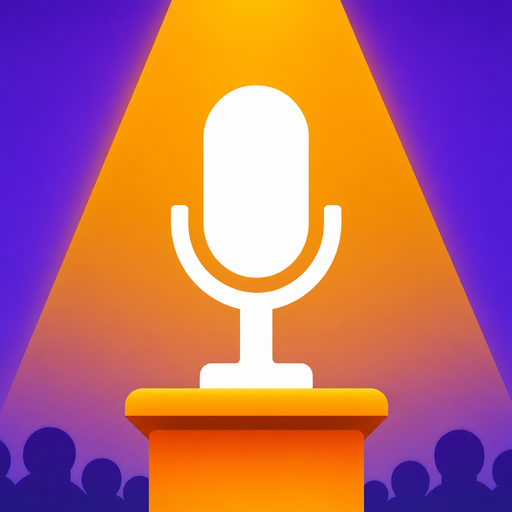
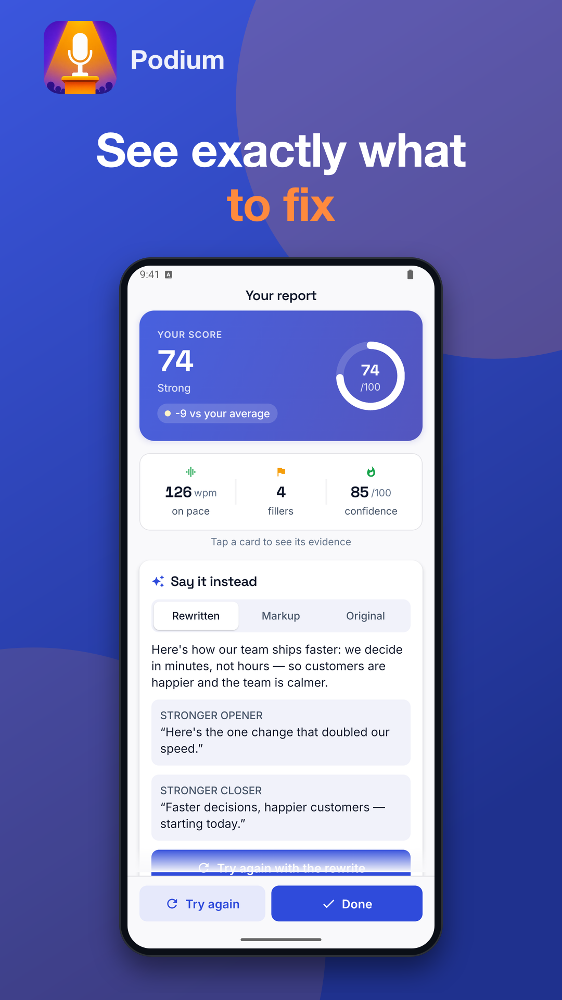
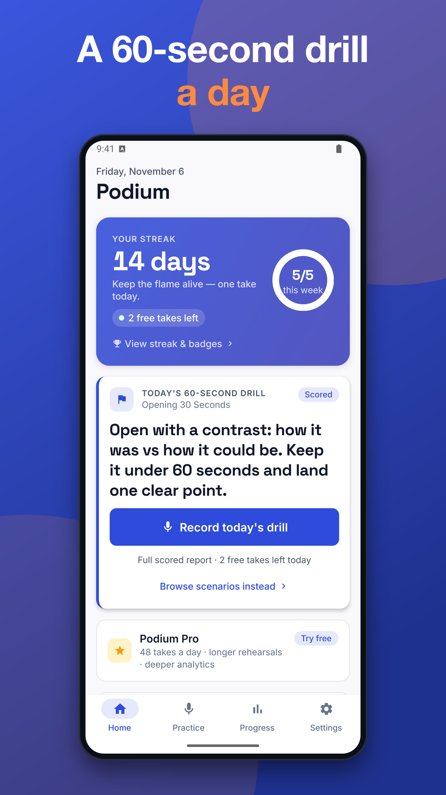
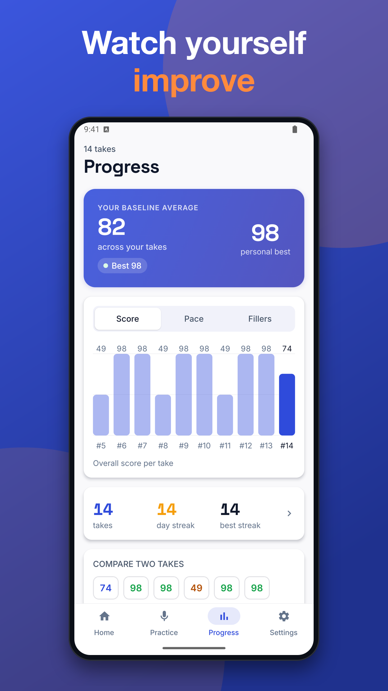
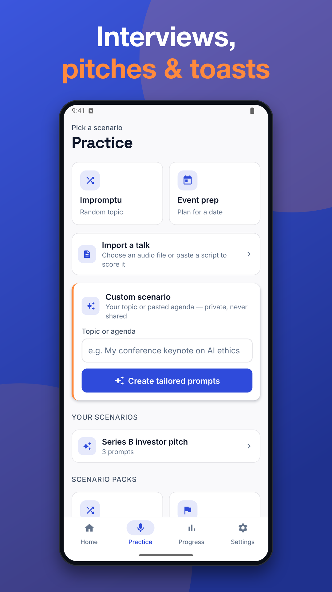
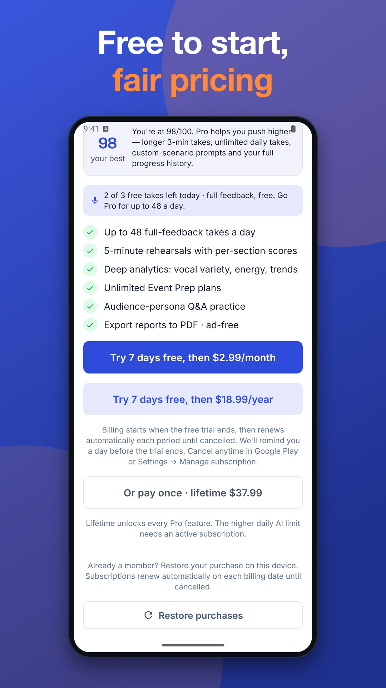

Podium: Public Speaking Coach
Public speaking practice app: AI speech coach to cut filler words and fix pace





Podium is a public speaking practice app that gives you a coach's feedback in seconds. Speak for up to a minute on a prompt, and get a clear report on your pace, filler words and structure, plus a tighter version of your own words to try next.
Whether you have a class presentation, a job interview, a viva, a pitch or a wedding toast coming up, short daily practice builds confidence. Start your first take right away, with no account needed.
HOW IT WORKS
• Pick a prompt or a scenario and tap record
• Speak for up to 60 seconds
• Get an AI report with a score, words per minute, filler words and a structure check (opening, point, close)
• Read "Say it instead", a rewrite of your own sentences that keeps your meaning
• Try again with the rewrite and compare how you did
WHAT YOU GET FREE
• Free daily practice with an AI speech coach
• Full report with transcript, filler words, pace and tips
• Scenario packs: job interview, work presentation, meeting update, startup pitch, viva and thesis defence, class presentation, wedding toast, eulogy and impromptu topics
• Daily drill with streaks and XP
• Progress trends so you can see your filler words and pace improve over time
• Reminders at the time you choose
PRACTISE FOR REAL MOMENTS
Use this public speaking practice app to rehearse the exact situation you are facing. Presentation practice with AI helps you open strongly, pause well and finish with a clear close. If you want to reduce filler words like "um" and "uh", the transcript highlights them so you can see where they happen. You can also mark a word as "not a filler" to correct the report.
PODIUM PRO
• Removes ads
• More practice depth and takes beyond the free daily practice
Prices, billing period and how to cancel are shown before you buy, and you can restore purchases at any time. Manage or cancel your subscription in Google Play.
PRIVACY AND DATA
• No account is needed to use the app. Signing in with an email code is optional and used for backup.
• Your speech is turned into text on your device by Android's speech recognizer. Audio is not uploaded, stored or shared.
• The text transcript is sent to our server and processed by an AI provider to create your feedback. An internet connection is needed for AI features.
• Your entries stay on your device unless you sign in to back them up. You can delete your account and data in the app.
• Anonymous, minimal usage analytics help us improve the app.
• The free version shows ads; Pro removes them.
• Every AI response has a "Report this AI response" control.
Podium is a coaching and skill-building tool for adults and teens. It is not a medical or therapy service.
Download this public speaking practice app and record your first take today. Speak a little every day and see your confidence grow.
Support: jeets98e@gmail.com